Photographer & filmmaker
Messina, Sicily · Available worldwide
Weddings, brand campaigns and motorsport — shot across Sicily, Prague and worldwide. Documentary, unposed, built for the moment as it happens.
"Francesco was so patient and worked with us, which made the whole experience wonderful. It felt like one of our friends was taking our Christmas pictures."
Jenny · family session, Prague
"He helps you with the poses and has a lot of information about every place that we walked by. I would highly recommend him to everyone."
Ayesha · city shoot, Prague
"The photos definitely benefited from the lack of other people. Francesco was great in helping to create natural poses."
Louis · city shoot, Prague
About
Sicily is home base — click a point to see the work that took me there.

Home base — weddings, brand campaigns and editorial work, with the rest of the map reachable on request.